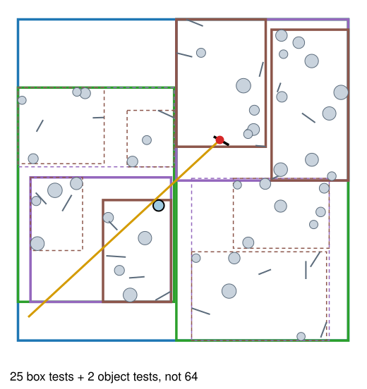
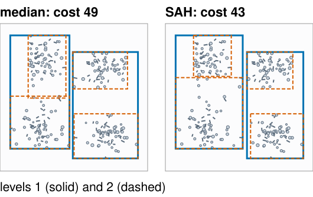
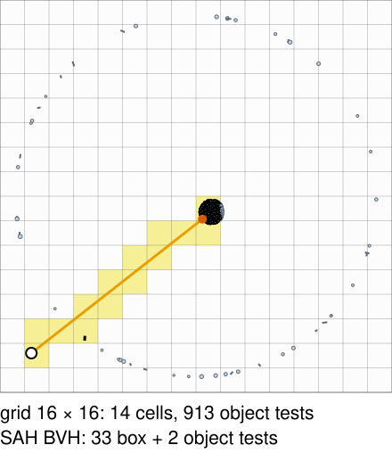
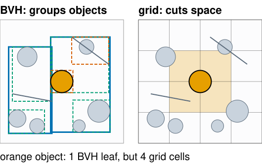

A ray caster tests every object for every ray: pixels × objects. This unit makes a ray cost about \log_2(\text{objects}) tests instead, and then compares ray tracing with rasterisation.
Bounding boxes and the slab test: is the ray anywhere near these objects?
Bounding-volume hierarchies (BVH): boxes inside boxes, a binary tree; how to traverse it, and how to build a good one (the surface area heuristic).
Uniform grids: walking the ray through cells; when they fail.
Rasterisation or ray tracing? What each is good at, and what GPUs now do in hardware.
Slides titled The math give the formulas and proofs; the ideas are complete without them.
hit iff t_\text{near} \le t_\text{far} and t_\text{far} > 0.
Six subtractions, three divisions (or multiplications by precomputed 1/d_k), a few comparisons: much cheaper than a triangle test.
d_k = 0 (a ray parallel to a slab): 1/d_k = \pm\infty in floating point, so the slab’s interval is (-\infty, \infty) if the origin is inside it and empty otherwise. No special case needed (recall Floating point, “Special values”).
Origin exactly on a slab plane with d_k = 0: 0 \cdot \infty = \text{NaN}; write the comparisons so that a NaN never wins a max or min.
Bounding-volume hierarchy

Boxes inside boxes: a binary tree. The root box holds everything; each node splits its objects into two children with their own boxes; leaves hold a few objects.
Traverse: if the ray hits a node’s box, look at both children; visit the nearer child first.
Keep the best hit so far; skip any box that starts farther away than it.
A ray that misses the root costs one box test.
In the figure: 64 objects; the ray needs 25 box tests and 2 object tests.
Each object is in exactly one leaf; the boxes of two children may overlap.
Building the tree: where to split?
Median split: split the objects at the median of the longest axis of their centres. Balanced, simple, but blind to empty space.
Surface area heuristic (SAH): try several split positions; estimate the cost of each and take the cheapest:
the chance that a random ray that hits the parent also hits a child is (about) the child’s surface area ÷ the parent’s;
cost = 1 box test + (area ratio × objects) on the left + (area ratio × objects) on the right;
do not split when a leaf is cheaper.
SAH puts tight boxes around clusters and leaves empty space out of the boxes, so rays through empty space are rejected early.
Example: parent area 10, 12 objects. Split A: left area 4 with 6 objects, right area 5 with 6: cost 1 + 0.4\cdot6 + 0.5\cdot6 = 6.4. Split B: left 7 with 10, right 2 with 2: 1 + 7 + 0.4 = 8.4. Leaf: 12. Take A.

The math: the surface area heuristic
Cauchy’s formula: for a convex body, the average projected area over all directions is a quarter of its surface area. So random lines hit a convex B' inside a convex B with conditional probability A(B')/A(B). In 2D the same holds with perimeters (Cauchy–Crofton).
Expected cost of a node split into L and R: C = C_\text{trav} + \frac{A_L}{A}N_L\,C_\text{isect} + \frac{A_R}{A}N_R\,C_\text{isect}, compared with N\,C_\text{isect} for a leaf. Choose the split minimising C; stop when no split beats the leaf.
In practice the candidate splits are bin boundaries along each axis (16 bins), evaluated in one sweep. It is a greedy heuristic: each level assumes its children will be leaves.
The math: why logarithmic
A balanced binary tree over N objects with leaves of size \le 2 has depth \lceil\log_2(N/2)\rceil.
A ray that hits only a few leaves visits a few root-to-leaf paths: about 2\log_2 N box tests (each visited node tests both children).
Not guaranteed: overlapping boxes, long thin objects (one long wall in every box) and rays that graze many boxes can visit many paths. Worst case: all \approx 2N nodes, worse than brute force.
Building costs O(N \log N) (sorting at each level) once; refitting the boxes after objects move costs O(N).
Uniform grids
Cut space into equal cells; list each object in every cell it overlaps.
Walk the ray from cell to cell in order, like drawing a line on a pixel grid (Bresenham, 3D DDA). Test the objects listed in the current cell.
Stop at the first cell whose own part of the ray contains a hit.
Fast when objects are spread evenly (the cell size matches the object size).
Fails for “a teapot in a stadium”: a small detailed object in a big empty scene. Most cells are empty, the few cells around the teapot hold everything. In the demo, a ray into the teapot of 1024 objects tests 913 of them in a 16 × 16 grid; the BVH needs 35 tests.
Octrees and k-d trees adapt the cell size to the content.

Objects or space?
BVH
grid, octree, k-d tree
splits
the objects into groups
space into cells
each object is in
exactly one leaf
every cell it overlaps
boxes/cells
may overlap
never overlap
empty space
cut away by tight boxes
still has cells

Moving objects: a BVH can refit its boxes bottom-up (keep the tree, recompute the boxes, O(N)) and rebuild only now and then; a grid re-lists the moved objects.
Real-time renderers rebuild or refit every frame for animated characters.
Try it: boxes, grids and tests
Tracing a real mesh
The marching-cubes surface of the synthetic nuclei stack (from Marching cubes): 6728 triangles.
SAH BVH: 7291 nodes, depth 15, built in under a second.
Rays aimed at the stack: on average 12.9 box tests and 0.9 triangle tests per ray, instead of 6728 triangle tests. \log_2 6728 = 12.7.
Every triangle is tested in the same way as before (barycentric coordinates); only the number of tests changed.
The same structure answers other questions: which triangle is under the mouse (picking), is a point inside the surface (count crossings along a ray), the distance to the surface.
Hybrid renderers rasterise what the camera sees and trace rays for shadows, reflections and indirect light. Choose by scenario: a wireframe CAD view or a game at 60 frames per second: rasterise; a mirror room or a physically correct image: trace.
Hardware ray tracing
Recent GPUs have fixed-function units for the two inner loops of this unit: box tests while walking a BVH, and ray–triangle tests. The programmer supplies the triangles and says what happens at a hit; the hardware builds and walks the tree.
Why it is still hard: rays that bounce in different directions want different parts of the scene at the same time. GPUs run threads in lock-step groups that like to read neighbouring memory; scattered rays break both (branch divergence and incoherent memory access: the GPU day).
Real-time ray tracing therefore uses few rays per pixel and a denoiser (unit 4).
Summary
Most ray–object tests miss; test a bounding box first, and skip everything inside it.
Slab test: intersect the ray’s t-intervals in the slabs of a box; IEEE infinities handle parallel rays.
BVH: a tree of boxes; traverse nearest child first and skip boxes beyond the best hit; about 2\log_2 N tests per ray.
Build by the median (balanced) or by the surface area heuristic (tight boxes, cheaper rays).
Grids: walk the cells along the ray; fine for evenly spread objects, bad for a teapot in a stadium.
Rasterisation vs ray tracing: the same primary visibility; rays are natural for everything secondary. GPUs now accelerate BVH and triangle tests in hardware.